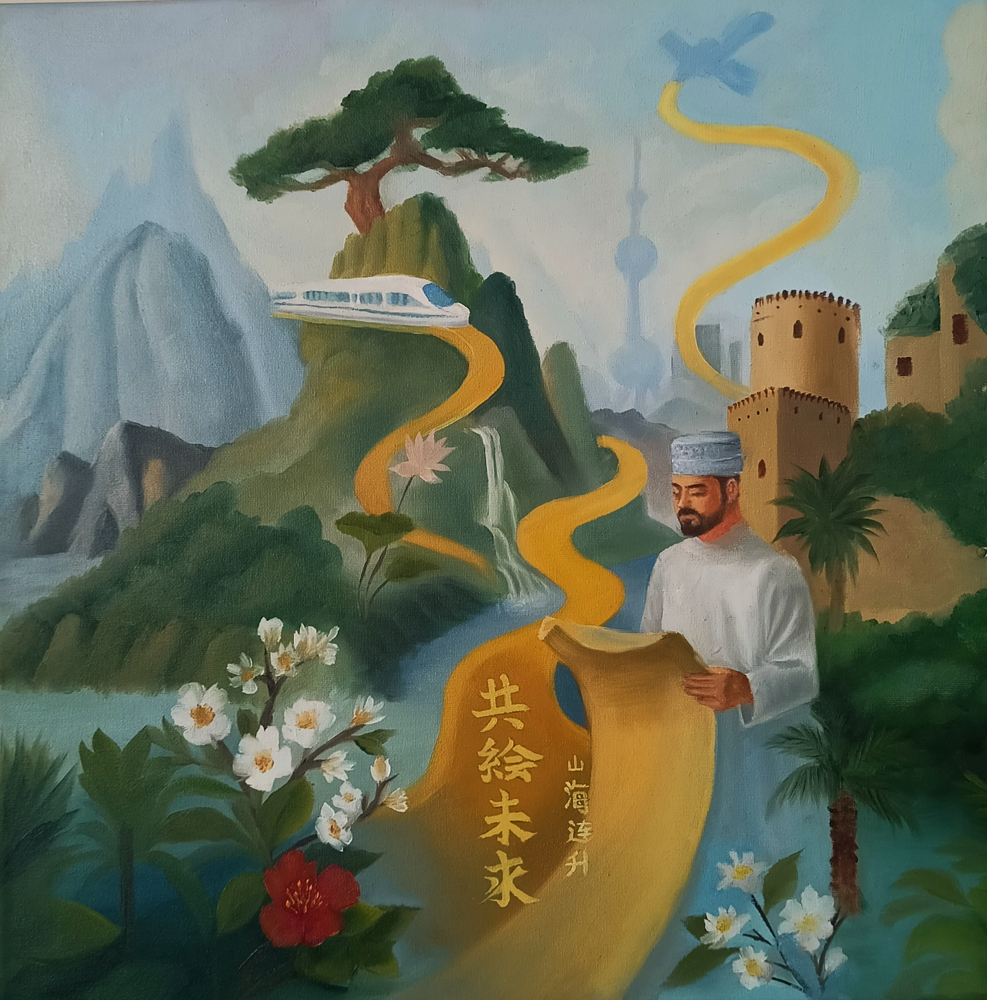
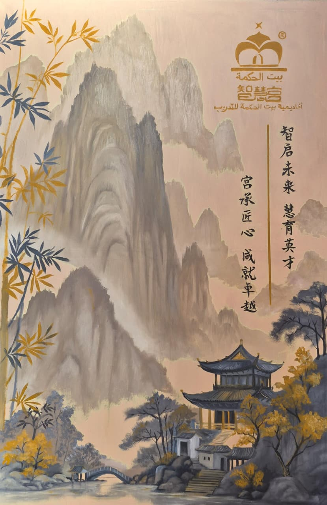
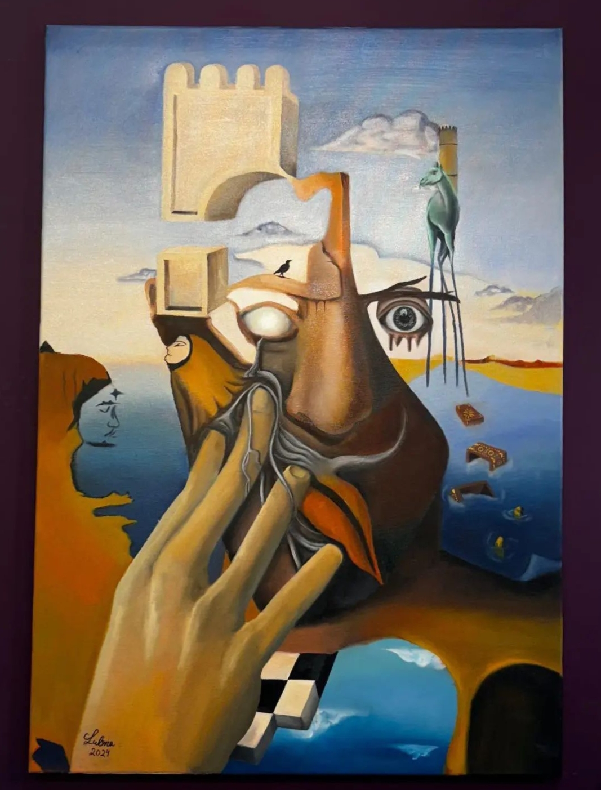
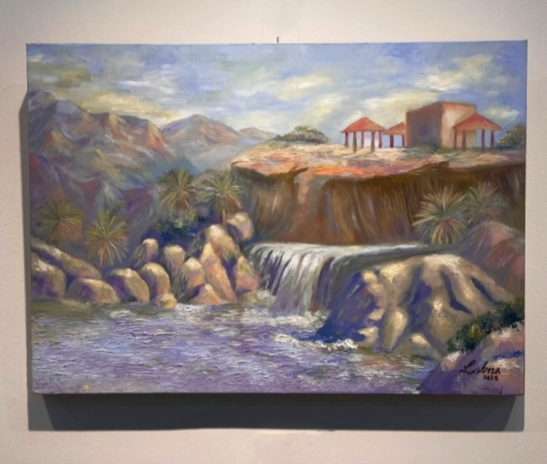
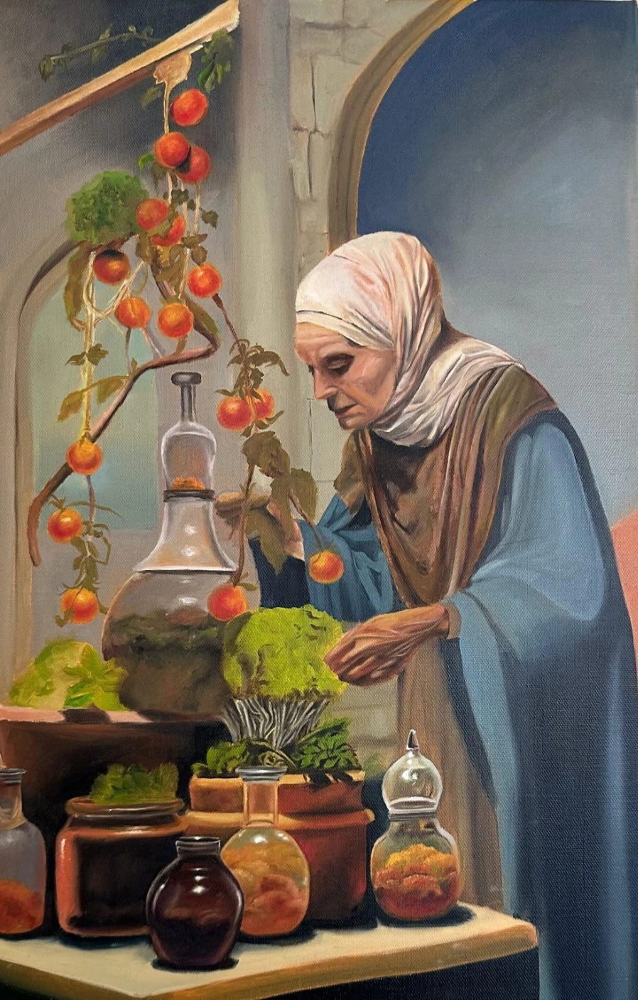
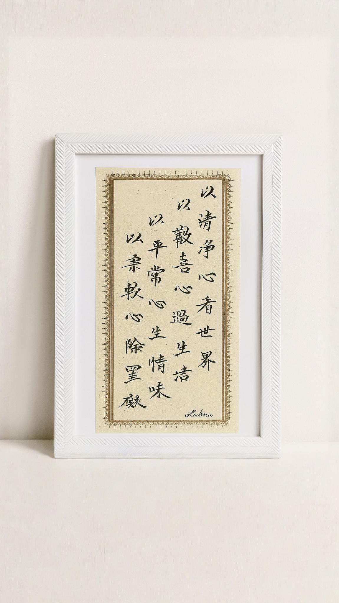
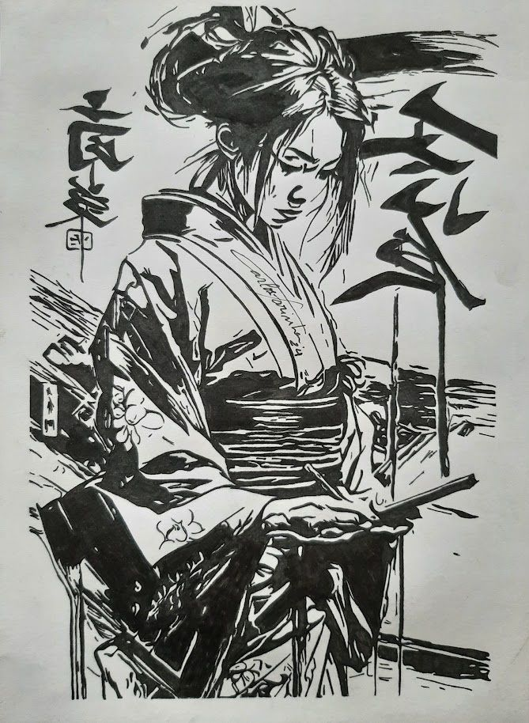
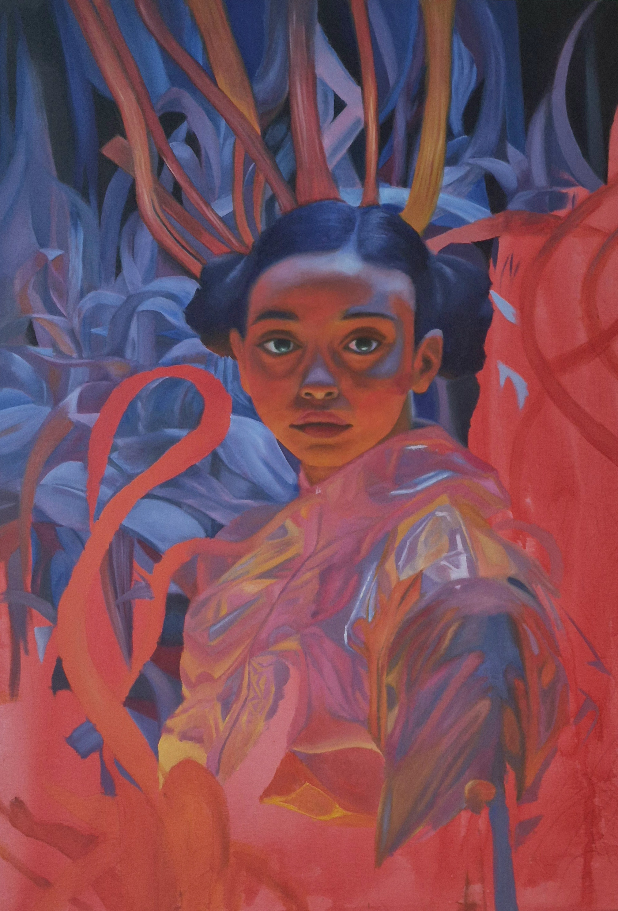

Portfolio
Art Portfolio
Oil paintings, watercolour studies, sketches and ink calligraphy — click any piece for the full story. Use the filters below to browse by medium.

Path to the Future

Wisdom in Harmony

Fragments of the Inner World

Secret Light

Doctor

Power

Chinese Handwriting I

Chinese Handwriting II

Sketch Study
